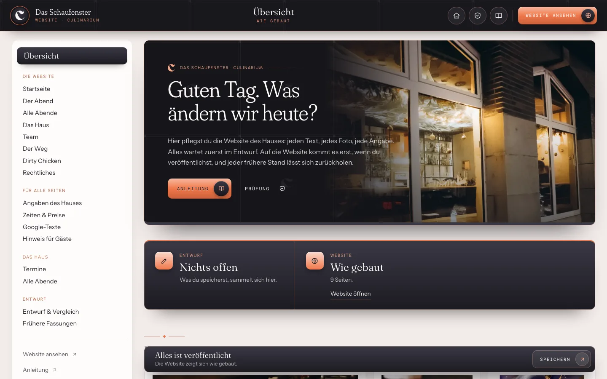
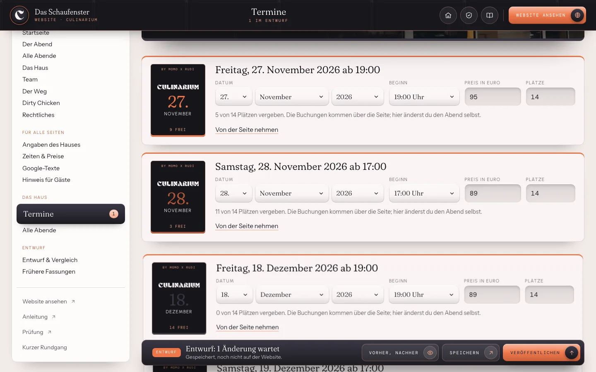
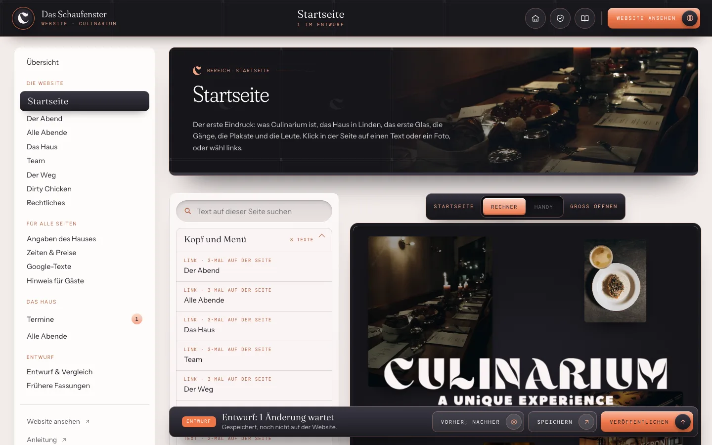
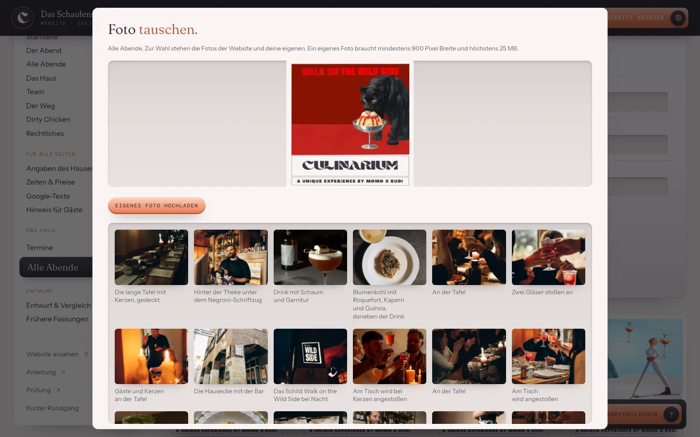
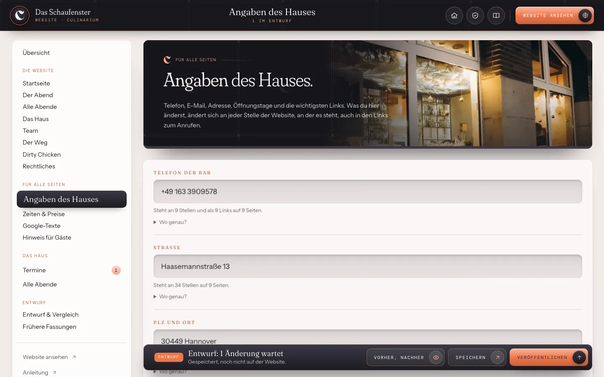
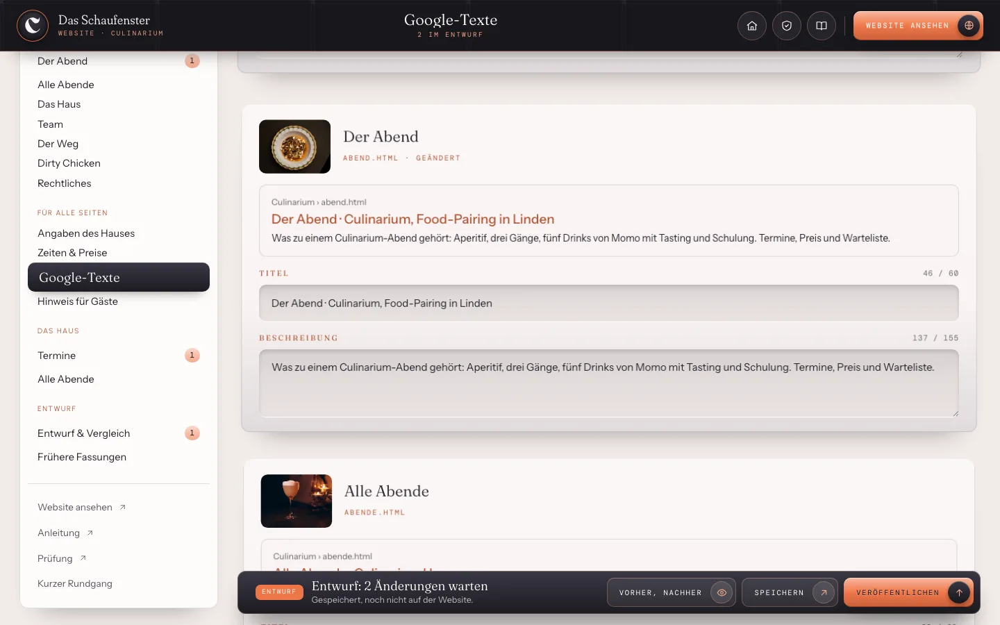
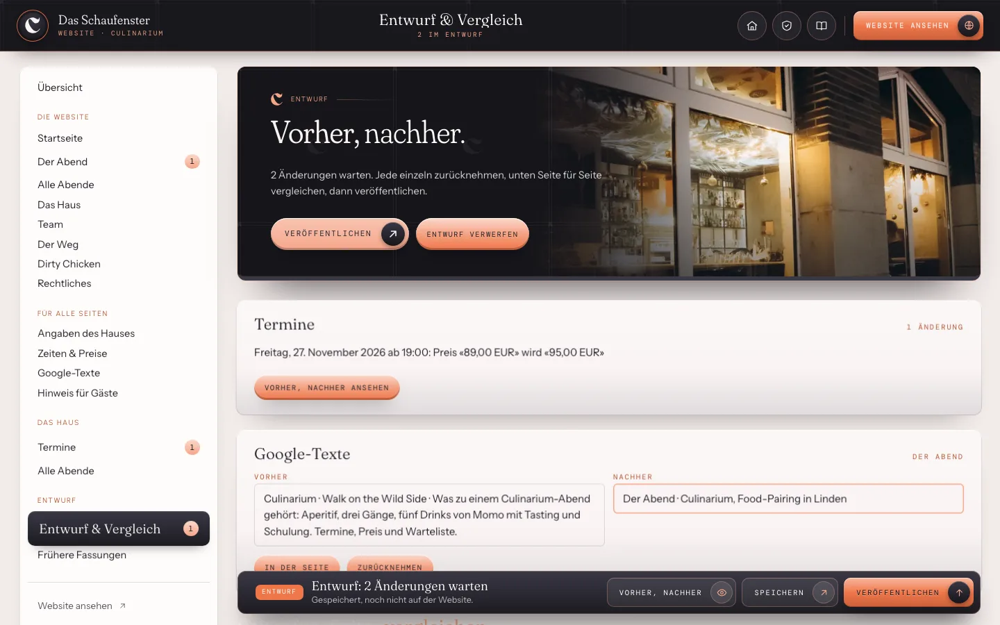
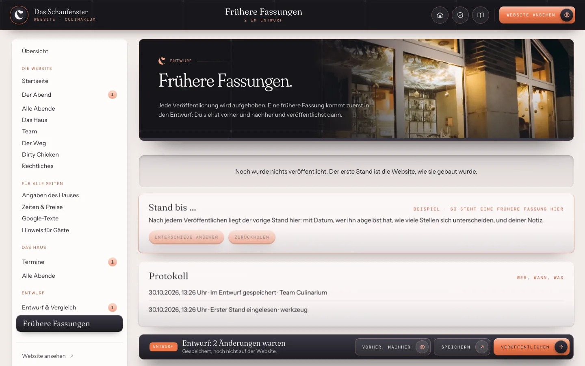

Website pflegen
So pflegst du deine Website.
Mit «Website pflegen» pflegst du die Website des Culinariums selbst. Die nächsten Abende, jeder Text, jedes Foto, Telefon, Adresse, die Zeiten der Bar und die Texte für Google lassen sich hier ändern. Nichts geht von selbst online: Was du speicherst, wartet im Entwurf, bis du es veröffentlichst. Jeder frühere Stand lässt sich zurückholen.
1
Die Übersicht
Oben siehst du, ob etwas im Entwurf wartet und wann die Website zuletzt veröffentlicht wurde. Darunter «Häufig gebraucht»: die Aufgaben, die im Alltag am meisten vorkommen. Ganz unten jeder Bereich der Website mit einem Foto.
Links im Rand findest du dieselben Bereiche, dazu «Angaben des Hauses», «Zeiten & Preise», «Google-Texte», «Hinweis für Gäste», die Termine und alle bisherigen Abende. Am Handy öffnet «Bereiche» oben den Rand.

2
Die nächsten Abende
Unter «Termine» steht jeder Abend, für den Gäste einen Platz an der Tafel buchen können: Tag, Beginn, Preis und Plätze. Links siehst du sein Plakat, wie es auf der Seite «Der Abend» hängt. «Neuer Abend» legt einen weiteren an, mit Zeit, Preis und Plätzen des letzten Abends als Vorschlag.
Verschiebst du einen Abend, wählst du Tag, Monat und Jahr neu. «Von der Seite nehmen» nimmt ihn heraus; jeder veröffentlichte Stand lässt sich zurückholen. Darunter zeigt die Vorschau die Seite mit deinen Terminen, am Rechner und am Handy.

3
Einen Text ändern
Bereich wählen, zum Beispiel «Startseite». Rechts steht die Seite, wie die Gäste sie sehen. Klick auf den Text, den du ändern möchtest: links öffnet sich das Feld, die Seite rechts schreibt beim Tippen mit.
Steht derselbe Text auf mehreren Seiten, bietet das Feld «An allen … Stellen ändern». «Wie ursprünglich» holt den gebauten Text zurück. Statt etwas zu löschen, lässt sich ein ganzer Abschnitt ausblenden und später «Wieder zeigen».

4
Foto tauschen oder eigenes Foto hochladen
Klick in der Seite auf ein Foto, oder unter «Alle Abende» auf das Plakat eines Abends. Zur Wahl stehen alle Fotos der Website. Mit «Eigenes Foto hochladen» kommt ein neues dazu: mindestens 900 Pixel breit, höchstens 25 MB, im Format JPG, PNG oder WebP. Das Werkzeug setzt es in vier Grössen für Rechner und Handy.
Die Bildbeschreibung darunter lesen Vorlesegeräte und Suchmaschinen. Ein Satz, was auf dem Foto zu sehen ist.

5
Telefon, Adresse, Instagram
Unter «Angaben des Hauses» steht jede Angabe, die auf vielen Seiten vorkommt, mit dem Hinweis, wie oft und auf wie vielen Seiten. Du änderst sie einmal, und sie ist überall neu, auch im Link zum Anrufen am Handy.
Die Zeiten der Bar und die Preise im Text findest du unter «Zeiten & Preise». Menü und Drinks eines Abends pflegst du in «Karten».

6
Google-Texte
Für jede Seite ein Titel und eine Beschreibung, so wie sie in der Trefferliste von Google erscheinen. Die Vorschau darüber zeigt es beim Tippen. Etwa 60 Zeichen Titel und 155 Zeichen Beschreibung zeigt Google ganz, die Zahl wird rot, wenn es länger wird.

7
Speichern, ansehen, veröffentlichen
Solange etwas nicht gespeichert ist, steht unten «Eingaben noch nicht gespeichert» und der Knopf «Speichern» leuchtet. Nach dem Speichern erscheint eine Quittung mit «Vorher/nachher ansehen» und «Rückgängig». Tastenkürzel: Cmd + S am Mac, Strg + S unter Windows.
«Vorher, nachher» zeigt jede Änderung mit dem alten und dem neuen Wortlaut, einzeln zurücknehmbar. «Veröffentlichen» bringt den Entwurf auf die Website, Texte, Fotos und Termine zusammen, mit einer kurzen Notiz für die früheren Fassungen.

8
Einen früheren Stand zurückholen
Unter «Frühere Fassungen» steht jede Veröffentlichung mit Datum und Notiz. «Zurückholen» legt sie in den Entwurf. Auf die Website kommt sie erst, wenn du wieder veröffentlichst. Die Termine haben ihre früheren Fassungen in ihrer Ansicht, ganz unten.

9
Wenn etwas nicht klappt
Jede Meldung trägt den Knopf «Was tun?». Er führt zur Prüfung: Sie läuft auch dann, wenn das Werkzeug selbst nicht startet, sagt, was los ist, und was zu tun ist. Gespeichertes geht dabei nie verloren.